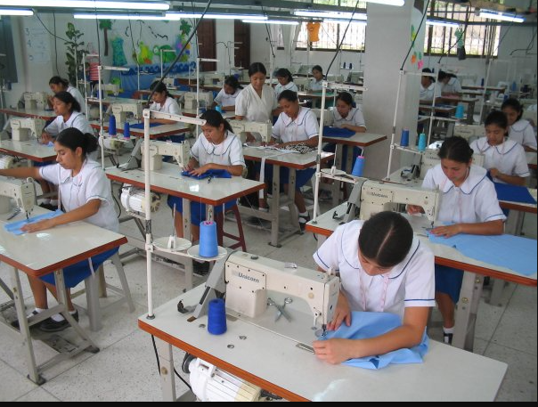
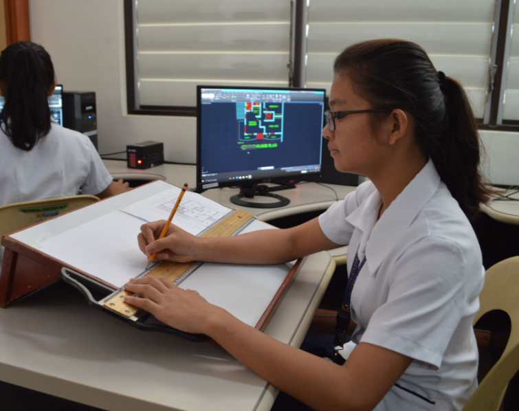
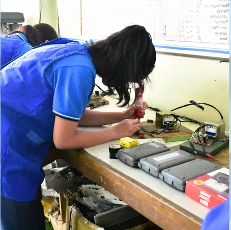
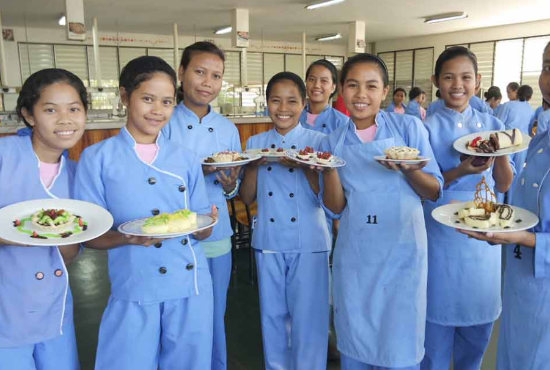
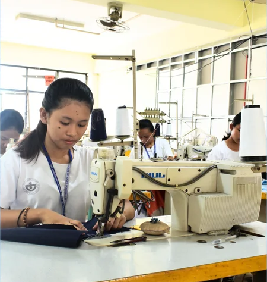
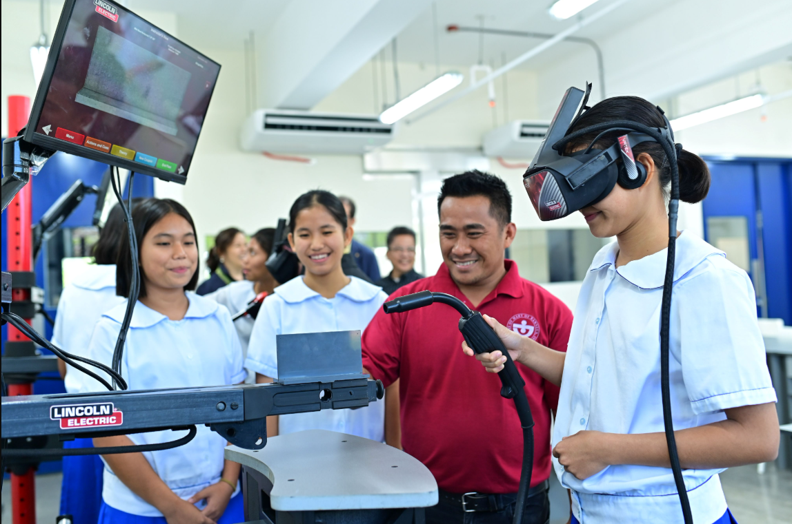

Our school is a testament to a legacy of educational excellence & compassionate service.
At the Sisters of Mary Schools, students engage in a comprehensive K to 12 curriculum that includes 4 years of Junior High School, and 2 years of Senior High School. Since its implementation in June 2012, this program has provided a robust 12-year educational framework, allowing students to master essential skills and competencies. The Sisters of Mary Schools place a significant emphasis on technical vocational courses, equipping students with practical and industry-relevant skills that prepare them for immediate entry into the workforce or further specialization.

Bagmaking
This course introduces students to the basic concepts and skills in Bag Making. It covers the fundamentals of crafting bags using various materials such as fabric, leather, synthetic materials, and accessories. Students will develop practical skills in measuring, cutting, hand and machine sewing, assembling parts, and applying finishing techniques. The subject also emphasizes creativity, precision, proper use of tools and equipment, and adherence to safety and quality standards. This foundational training prepares students for more advanced topics in bag making, fashion accessories, and small-scale entrepreneurship in higher grade levels.

AutoCad
This course introduces students to the basic concepts and skills in Computer-Aided Design (CAD). It covers the fundamentals of technical drawing, basic drafting principles, and the use of CAD software to create 2D and simple 3D designs. Students will develop practical skills in creating, editing, and interpreting digital drawings using industry-standard tools. The subject also emphasizes precision, attention to detail, and the application of design standards and safety protocols. This foundational training prepares students for more advanced topics in drafting, engineering design, and architecture in higher grade levels.
Visual Graphics Design
This course introduces students to the basic concepts and skills in Visual Graphic Design. It covers the fundamentals of design principles, elements of art, and basic layout and composition techniques. Students will develop practical skills in using traditional and digital tools to create simple graphic design outputs such as posters, logos, and brochures. The subject also emphasizes creativity, visual communication, and the ethical use of design elements and software. This foundational training prepares students for more advanced topics in visual arts and graphic design in higher grade levels.

Bookkeeping
Health Care Services

Electronics

Hospitality Management and Culinary Arts

Fashion Technology

Industrial Arts
6+
Countries
20k+
Students
160K+
Graduates
5
Year Program